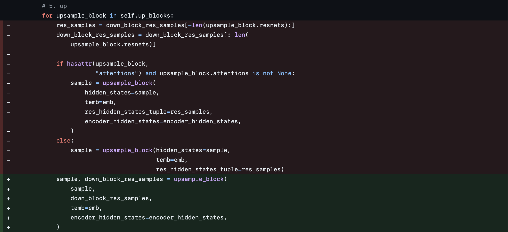

Optimizing StableDiffusion Model#
In this tutorial, we will explore how we can use Core ML Tools APIs for compressing a Stable Diffusion model for deployment on an iPhone. The model takes a natural language description, known as a prompt, and produces an image matching that description.
Specifically, we will use the SDXL model from HuggingFace. For the purpose of this tutorial we use apple/ml-stable-diffusion repo to convert, compress and run the model.
Execute the following command to generate Core ML model files (.mlpackage) for UNet, TextEncoder and VAEDecoder models needed for the SDXL pipeline:
python -m python_coreml_stable_diffusion.torch2coreml --convert-unet --convert-vae-decoder \
--convert-text-encoder --refiner-version stabilityai/stable-diffusion-xl-refiner-1.0 \
--xl-version --model-version stabilityai/stable-diffusion-xl-base-1.0 \
--latent-h 64 --latent-w 64 -o output-xl-512
The largest model within SDXL is the UNet model, measuring 4.8 GB in size with float16 precision. This is too big for running on iPhones or iPads. In order to deploy this model, we need to compress it.
For the purpose of this tutorial we will use a fixed prompt - “cat in a tuxedo, oil on canvas”, to compare output images produced by different model variants [1].
Execute the following command to generate image from the baseline SDXL pipeline using CoreML models generated above:
python -m python_coreml_stable_diffusion.pipeline --prompt "cat in a tuxedo, oil on canvas" \
-i output-xl-512 -o base_xl --compute-unit CPU_ONLY --seed 231 \
--model-version stabilityai/stable-diffusion-xl-base-1.0
Palettizing CoreML Model#
Scalar palettization#
Let’s start with data free scalar palettization using ct.optimize.coreml.palettize_weights API.
import coremltools as ct
import coremltools.optimize as cto
model = ct.models.MLModel(
"output-xl-512/Stable_Diffusion_version_stabilityai_stable-diffusion-xl-base-1.0_unet.mlpackage"
)
config = cto.coreml.OptimizationConfig(
global_config=cto.coreml.OpPalettizerConfig(nbits=4),
)
compressed_model = cto.coreml.palettize_weights(model, config)
Trying with nbits equal to 8, 6 & 4 bits we see the following results:
Config |
Model Size |
Image |
|---|---|---|
8-bit (per tensor) |
2.40 GB |
|
6-bit (per-tensor) |
1.80 GB |
|
4-bit (per-tensor) |
1.21 GB |
Applying 8bit palettization can reduce the model size to be about half of the float16 model, but it is still much too large to consider iOS integration.
With 6bit we can finally run this model on an iPad. With 4bit compression we are unable to get a good image anymore, meaning the model isn’t accurate.
Grouped channel palettization#
Let’s try to regain the accuracy loss from 4 bit palettization by applying the per_grouped_channel palettization, which increases the number of LUTs (look up tables) per weight tensor.
op_config = cto.coreml.OpPalettizerConfig(
nbits=4,
mode="kmeans",
granularity="per_grouped_channel",
group_size=16,
)
config = cto.coreml.OptimizationConfig(
global_config=op_config,
)
compressed_mlmodel = cto.coreml.palettize_weights(mlmodel, config)
Experimenting with group_size equal to 4, 16 & 32 we see the following results:
Config |
Model Size |
Image |
|---|---|---|
4-bit (per-tensor) |
1.21 GB |
|
4-bit (group_size=4) |
1.22 GB |
|
4-bit (group_size=16) |
1.21 GB |
|
4-bit (group_size=32) |
1.21 GB |
We see that images generated with grouped channel palettization are much better than one generated with scalar palettization. We are able to reclaim most of the accuracy back, with a very slight increase in size. This increase is due to the little bit of extra space taken by the additional lookup tables.
Joint compression#
In this section, we aim to further compress the model using joint compression techniques. We’ll utilize the ct.optimize.torch.* APIs to compress the PyTorch model.
The process involves two main steps: pruning the model using calibration data with SparseGPT, followed by data-free palettization of the pruned model using PostTrainingPalettizer.
Pruning with SparseGPT#
The LayerwiseCompressor (SparseGPT) algorithm compresses a sequential model layer by layer. Since it only supports sequential models, where the output of one layer directly feeds into the input of the next, some minor modifications are required for the UNet2DConditionModelXL to apply this algorithm.
We adjust the forward interface for the down, mid, and up blocks to ensure that the hidden_states, down_block_res_samples, temb, and encoder_hidden_states flow through all the blocks. The updated hidden_states and down_block_res_samples are then returned as outputs. This adjustment is necessary to avoid any skip connections across these blocks, so that the model is sequential.
Here are some code snippets highlighting the changes for reference:
CrossAttnDownBlock2D
UNetMidBlock2DCrossAttn
UpBlock2D
We accordingly adjust the top-level module that invokes the various down, mid, and up blocks.
UNet2DConditionModel 
The model is then compressed at the granularity of the down, mid, and up blocks using the layers setting in LayerwiseCompressorConfig. In practice, this means that once a down block is fully compressed, its quantized outputs are used as inputs for the next block, and so on.
We used the following text prompts to calibrate the model. Samples from all timesteps were used for calibration.
modern office building, 8 stories tall, glass and steel, 3D render style, wide angle view, very detailed, sharp photographic image, in an office park, bright sunny day, clear blue skies, trees and landscaping
image of a transparent tall glass with ice, fruits and mint, photograph, commercial, food, warm background, beautiful image, detailed
german castle on a mountain, blue sky, realistic, photograph, dramatic, wide angle view
from coremltools.optimize.torch.layerwise_compression import (
LayerwiseCompressor,
LayerwiseCompressorConfig,
ModuleSparseGPTConfig,
)
def calibration_data_loader():
input_sample = load_data_iter()
yield input_sample
prune_config = ModuleSparseGPTConfig(target_sparsity=0.4)
compressor_config = LayerwiseCompressorConfig(
global_config=prune_config,
calibration_nsamples=128,
input_cacher="gpt",
layers=['down_blocks.\d+', 'mid_block', 'up_blocks.\d+']
)
pruner = LayerwiseCompressor(torch_model, compressor_config)
sparse_model = pruner.compress(calibration_data_loader)
Palettization with PostTrainingPalettizer#
Next, we take the sparse model and apply grouped channel palettization, similar as shown here, but in this case on a sparse PyTorch model.
from coremltools.optimize.torch.palettization import (
PostTrainingPalettizer,
PostTrainingPalettizerConfig,
ModulePostTrainingPalettizerConfig
)
palettize_config = ModulePostTrainingPalettizerConfig(
n_bits=4,
granularity="per_grouped_channel",
group_size=16,
)
ptp_config = PostTrainingPalettizerConfig(global_config=palettize_config)
palettizer = PostTrainingPalettizer(sparse_model, ptp_config)
sparse_palettized_model = palettizer.compress()
The sparse_palettized_model generated above can be converted to produce a joint compressed mlpackage.
Results#
Config |
Model Size |
Image |
|---|---|---|
40% Sparsity, 4-bit (group_size=4) |
1.04 GB |
|
40% Sparsity, 4-bit (group_size=16) |
1.03 GB |
|
50% Sparsity, 4-bit (group_size=4) |
942 MB |
|
50% Sparsity, 4-bit (group_size=16) |
933 MB |

{kind=link}
{kind=link}
{kind=link}
{kind=link}
{kind=link}
{kind=link}
{kind=link}
{kind=link}
{kind=link}
{kind=link}
To summarize, we were able to use post training palettization to compress SDXL UNet model from 4.8GB to 1.2GB in size. We were able to regain accuracy lost from 4-bit palettization by using per grouped channel LUT.
With joint compression, we are able to further bring down the model size to 1GB, while still generating decent accuracy images with 40% sparsity.